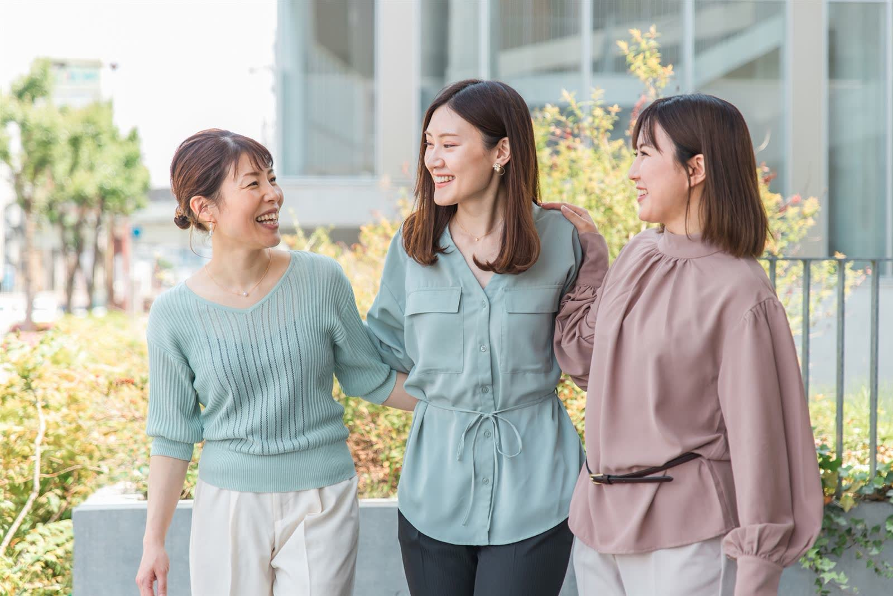
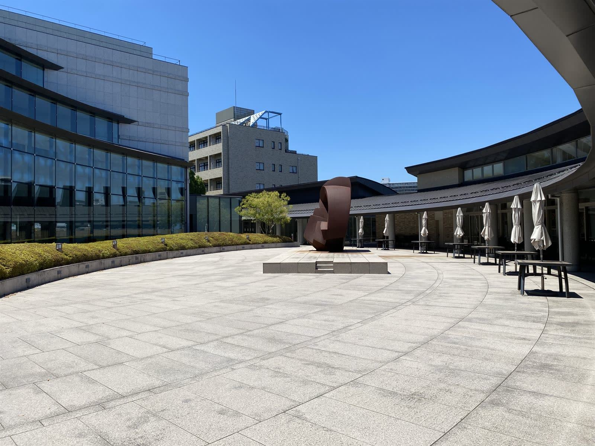
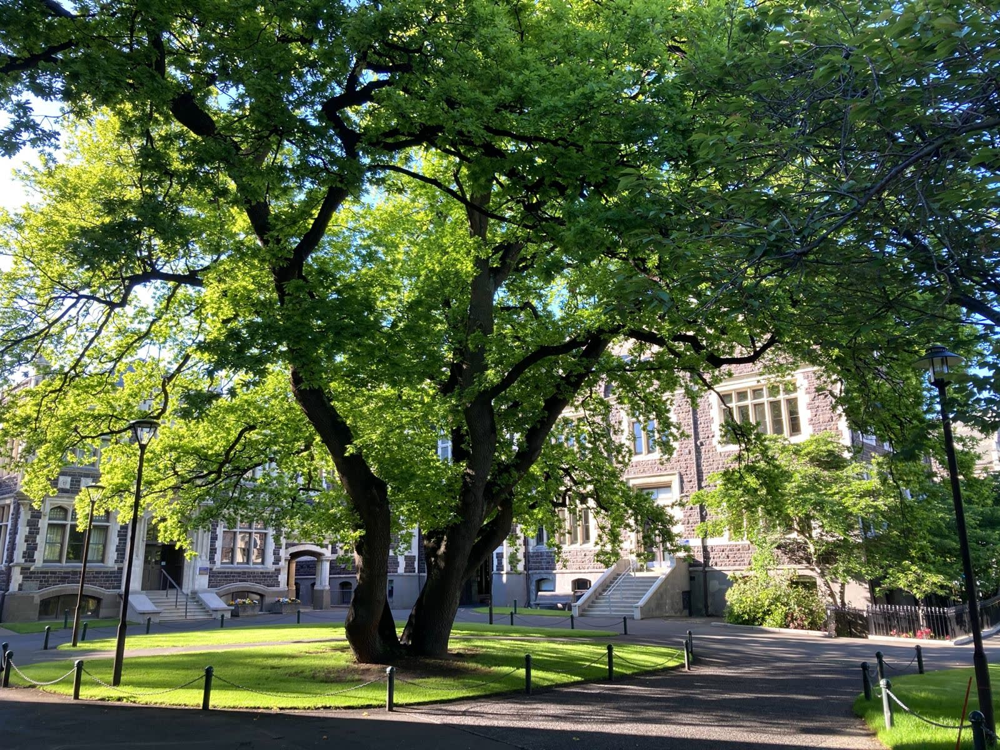
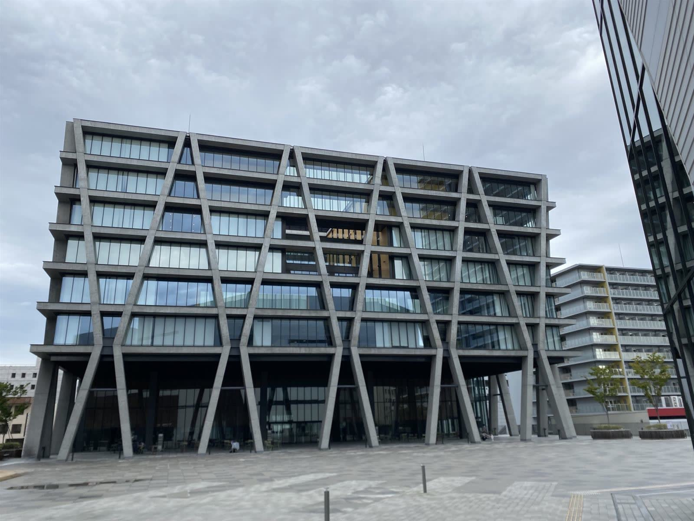

{{ f.name }}
{{ f.text }}
{{ f.depts }}

自分のことばで考え、自分の足で歩む。
結葉女子大学は創立以来、女性が自らの意思で学び、
社会のさまざまな場で力を発揮するための教育を続けてきました。
「結葉（ゆいは）」は、葉と葉が結びあい、ひとつの木を育てるという意味。
学生と教員、学生どうしが顔の見える距離で学びあうことを大切にしています。
{{ f.text }}
{{ f.depts }}
授業のあとの図書館、サークルの仲間、学園祭の準備。教室の外にも、自分を見つける時間があります。

学園祭 サークル
サークル
カフェテリア{{ s.quote }}
{{ s.text }}
※在学生インタビューはサンプル原稿です。
READ MORE
